Кастомные Seiko — коллекция и обзоры
Показаны готовые работы, описания модификаций, используемые детали, и процесс кастомизации. Подробные фото и технические спецификации.
Посмотреть галерею
Контакт: @uniquechronolab
.jpg)
Показаны готовые работы, описания модификаций, используемые детали, и процесс кастомизации. Подробные фото и технические спецификации.
Посмотреть галереюUCL — первая кастом-студия часов в Узбекистане, где каждый аксессуар превращается в индивидуальный стиль. Мы создаём часы, которых не найти в обычных магазинах: собранные вручную, продуманные до мелочей и вдохновлённые характером своего владельца.
Мы используем только надёжные японские механизмы, подбираем уникальные корпуса, циферблаты и стрелки, а большинство моделей выпускаем ограниченными партиями — чтобы каждая работа действительно оставалась особенной.
📍 Работаем по всему Узбекистану
📦 Бесплатная доставка по Ташкенту
Наведите курсор на любую мини-карусель — фото начнут меняться. Кликните для увеличения и листайте в лайтбоксе.
.jpg)
.jpg) 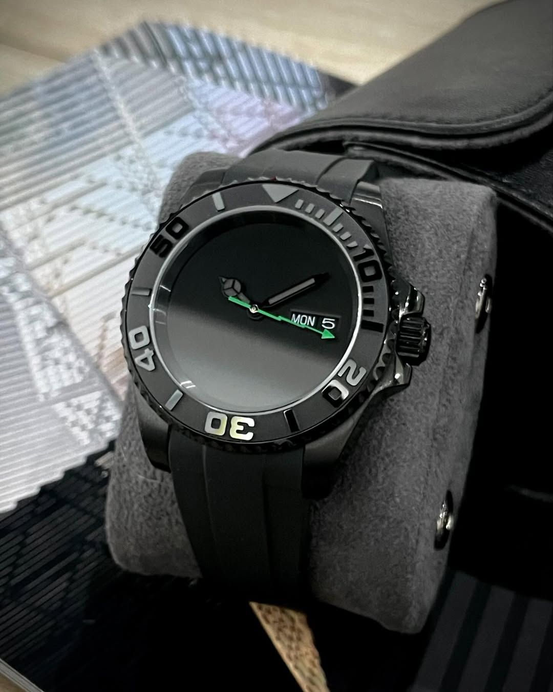
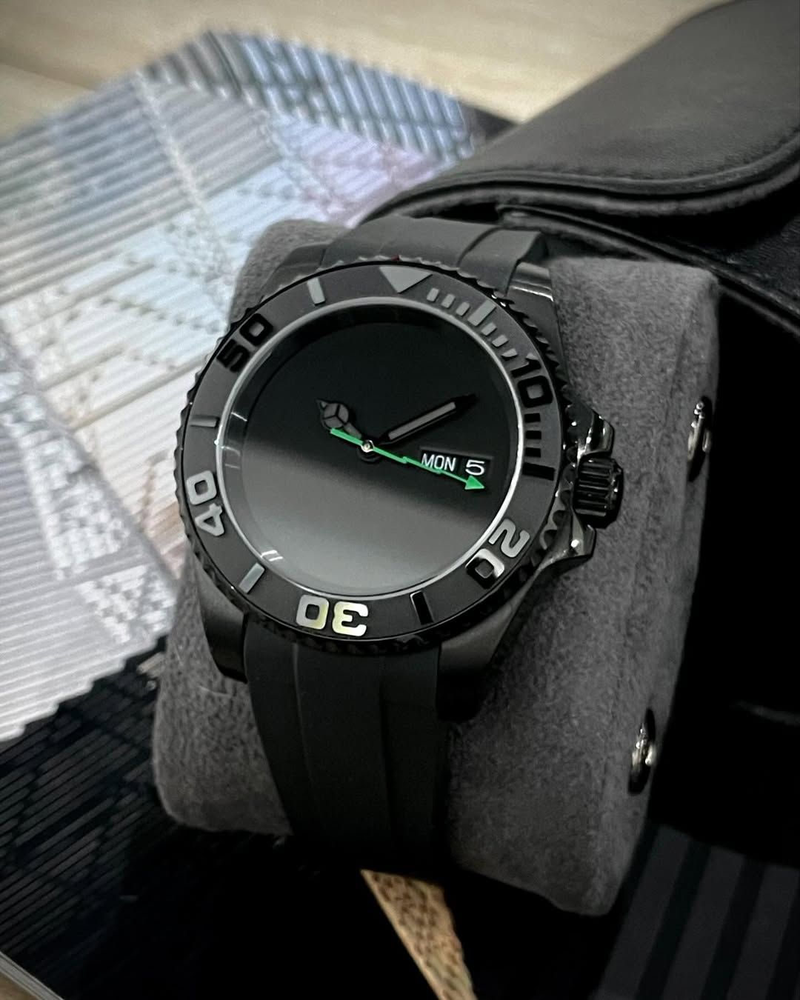
.jpg)
.jpg)
 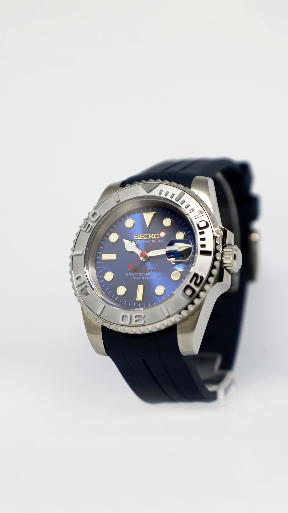
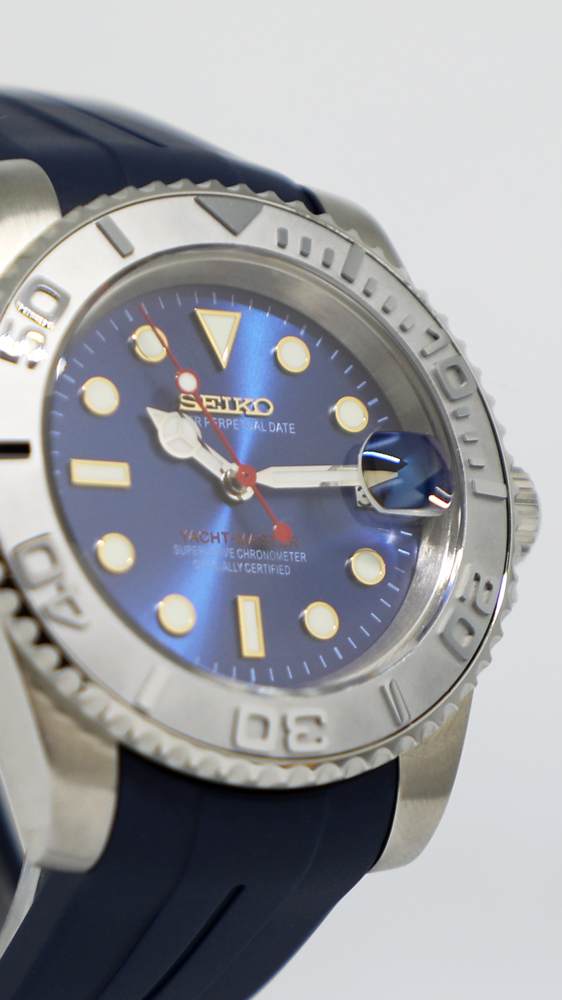
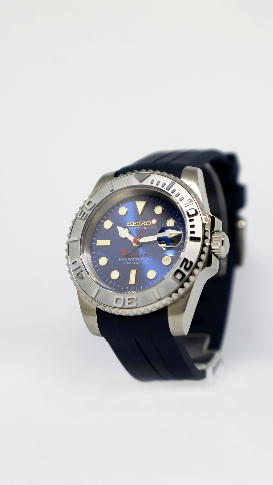
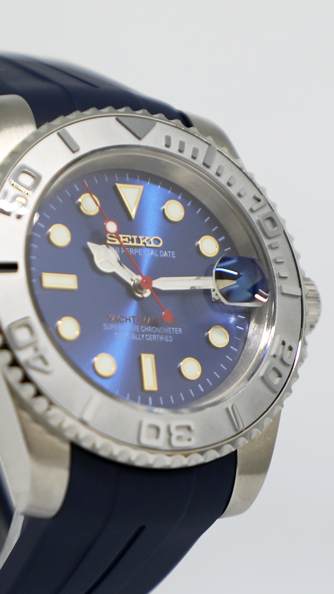
.jpg)
.jpg)
 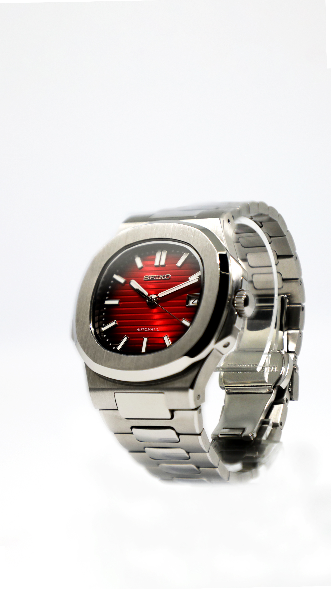
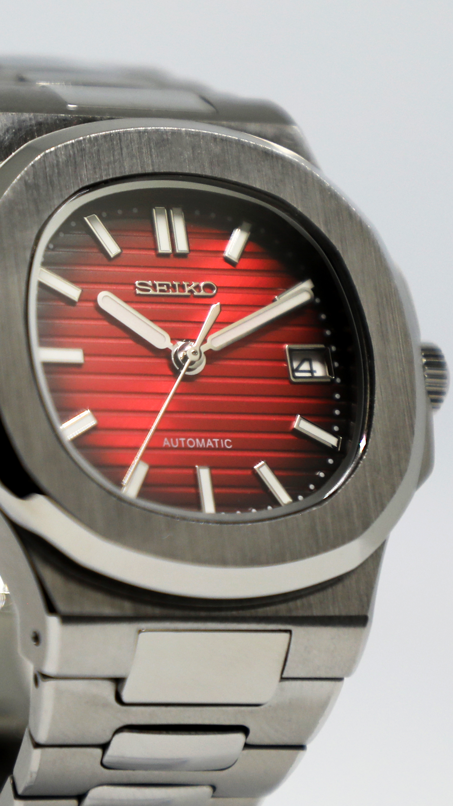
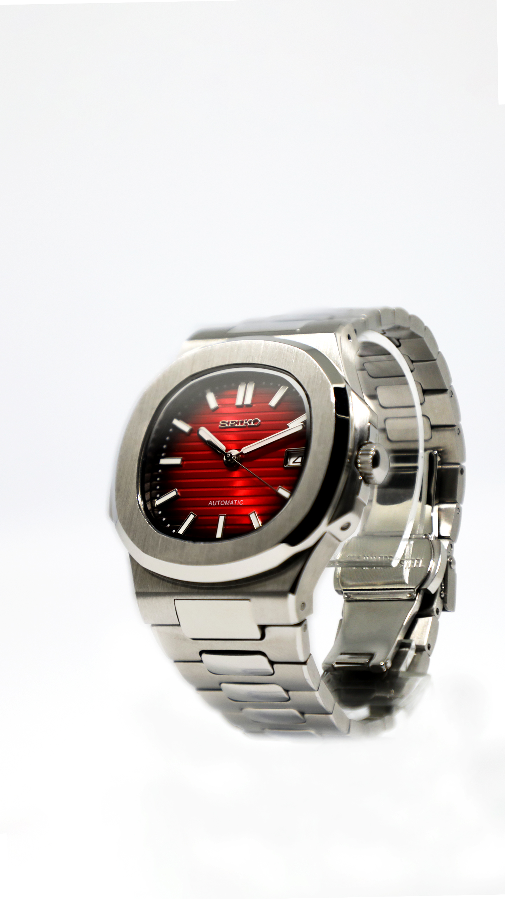
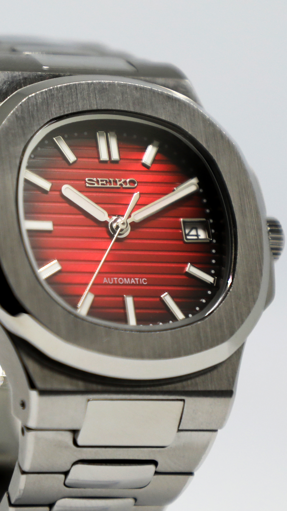


 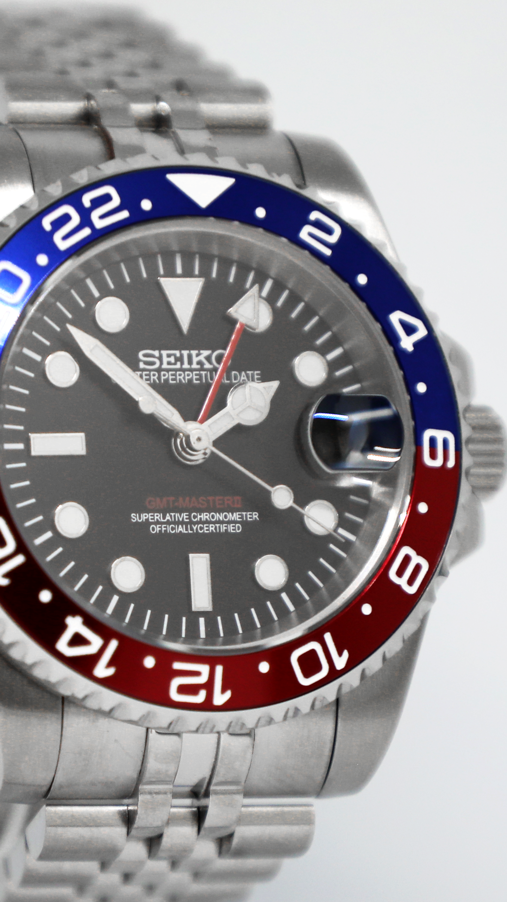
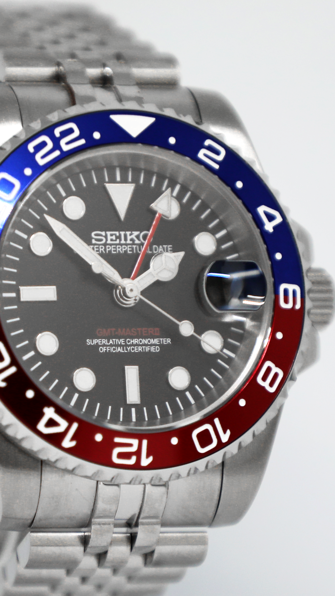
Смотрите кейсы и бehind-the-scenes в Instagram.
Instagram: @uniquechronolab
Telegramm: uniquechronolab
Заказы и консультации: укажите модель и желаемые изменения.